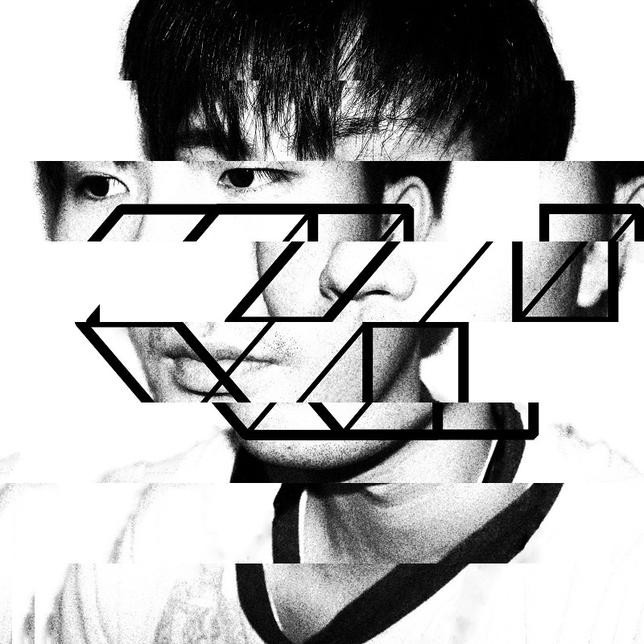

Profile

E. C. H / いしいえいいち 見出しへのリンク
Artist, Creative coder.
1994年、山口県生まれ。
幼少期から、電子音楽や機械・コンピューターに興味を持つ。
中学生ごろから「サーキットベンディング」 (wiki: Circuit Bending) と呼ばれる、既存の電子基板を改造し独自の機能を加える手法を用いて、電子楽器の制作を始めた。これらを使った即興演奏によるパフォーマンスを、文化施設やクリエイティブスペース、ライブハウスなどで行った。
その後、メディアアートに関心を持ち、デジタルアート作品の制作を始める。
おもにプログラミングを表現の軸とし、グラフィック作品や映像、楽曲、インスタレーションなどを制作。
大学在学時から学生グループ展や展覧会に参加。
2021年には自身初の個展「generative: world」を開催。
近年では「デイリーコーディング」 (Twitterハッシュタグ: #dailycoding) と呼ばれる、毎日ソースコードを書いてグラフィック等を制作する活動を行い、SNSなどで日常的に作品を発表し続けている。